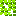
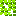

- Powered by three.js and GSAP.
- All graphics used in this experiment are for educational purposes only, all rights reserved to Polytron Corporation. Check out there awesome game FEZ.
- All images are inline because of CORS issues. Thanks to b64.io for making the base64 encoding less painful.